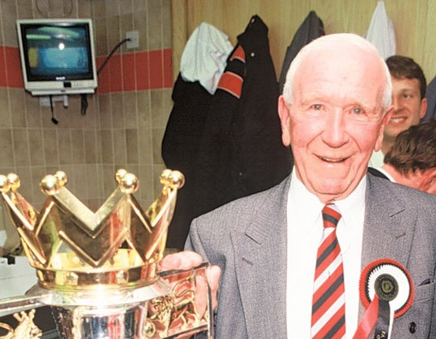

Chương 19

ó những người làm HLV rất sướng: Được một CLB giàu sụ mời về, siêu sao sẵn có đầy rẫy, tiền triệu nắm trong tay, muốn mua ai thì mua, tiêu gì thì tiêu. Alex Ferguson chưa bao giờ được hưởng diễm phúc “tọa hưởng kỳ thành” như thế. Đi đến đâu, ông cũng phải xây dựng, cải tổ (Mà bản thân ông lại thích như vậy, vì cái gì do bàn tay mình dựng nên thì mới quý). Hai CLB đầu tiên của Alex, East Stirlingshire và St Mirren, đều là những anh nhà nghèo ngụp lặn ở giải hạng nhì. Aberdeen có khá hơn, nhưng về mặt tài chính rất eo hẹp, thậm chí không có nổi một sân tập. Ngay đến Manchester United cũng chỉ có tiếng mà không có miếng. Bao nhiêu thành tích của United đã nằm ở quá khứ. Thời điểm 1986 họ chỉ như một cây cổ thụ rỗng ruột, sẽ đổ kềnh nếu không được cứu chữa kịp thời.
Nói đến Manchester United là nói đến Matt Busby và lứa cầu thủ trẻ huyền thoại của ông: Những “Đồng Ấu Busby” (Busby Babes). Thế hệ “Đồng Ấu Busby” năm năm liền lên ngôi vô địch Cúp FA trẻ. Họ không chỉ thắng mà còn thắng như chẻ tre, quét bay đối thủ với những tỷ số kinh hoàng như 10-0, 20-0. Hãythử nhìn qua bảng dưới đây, toàn là trận chung kết mà tỷ số còn cao ngất trời:
|
Chung kết Cúp FA Trẻ |
|
1953 Manchester United 9-3 Wolverhampton Wanderers 1954 Manchester United 5-4 Wolverhampton Wanderers 1955 Manchester United 7-1West Bromwich Albion 1956 Manchester United 4-3 Chesterfield 1957 Manchester United 8-2 West Ham United |
Khi được lên đội hình chính, “Đồng Ấu Busby” giúp United hai lần liên tiếp VĐQG Anh, trước khi tan rã bởi thảm họa Munich 1958. Chính Matt Busby cũng suýt mất mạng tại Munich, nhưng ông lừa được tử thần, và lại bắt tay vào gầy dựng nên một United mới. Trong thập niên 1960, United sở hữu một lúc ba Quả Bóng Vàng Châu Âu: Denis Law, Bobby Charlton, George Best, và trở thành CLB Anh đầu tiên giành Cúp C1.
Thế nhưng, sau Cúp C1 năm 1968 thì…chẳng còn gì nữa. Liên tiếp năm đời HLV sau Busby – McGuinness, O’Farrell, Docherty, Sexton, Atkinson-, không ai mang về nổi một chức VĐQG. Tất cả những gì United giành được chỉ là ba Cúp FA (Cúp QG Anh). Đối với một CLB như Southampton, thành tích đó đã đáng tự hào, nhưng United không phải là Southampton.
Ron Atkinson, biệt danh “Ron lớn”, không phải một HLV tồi, nhưng phong cách huấn luyện của ông có lẽ không phù hợp để đưa United trở lại đỉnh cao. Sáng ra, đến tận 10 giờ rưỡi, Ron mới đến sân tập The Cliff, còn cầu thủ thì đủng đỉnh đến sau. Mỗi ngày, cầu thủ tập đã ít, mà bài tập lại nhẹ; có những anh lười trốn tập, Ron cũng không để ý đến. Nhận định về ông thầy cũ, cả Bryan Robson lẫn Frank Stapleton đều nhất trí: Thái độ của Ron quá dễ dãi và thiếu chuyên nghiệp.
Dưới thời Ron Atkinson, tuy có nội quy, song chẳng ai theo. Học trò ông uống rượu như hũ chìm, khiến United giống một CLB…nhậu hơn là CLB bóng đá. Vừa không tập nhiều, lại vừa bê tha, chẳng trách gì thể lực của đa số cầu thủ đều rất kém. Colin Gibson, người từng khoác áo cả United lẫn Aston Villa, nhận xét:
-Thể lực cầu thủ Manchester kém đến kinh ngạc. Ở Villa, chúng tôi khỏe hơn nhiều. United có nhân tài chứ không phải không, nhưng dưới quyền Ron, ai cũng lười chảy thây ra, nên không phát huy được hết năng lực. Những bài tập của Ron bài nào cũng dễ, đứng tè một cái cũng xong! Cứ chia ra mỗi bên năm người đá chơi chơi, xong rồi tập chạy một tý, thế rồi xách giỏ về nhà.
Ở Villa, khi chạy thi, Gibson chỉ thuộc hạng trung bình. Nhưng sang United, anh luôn về nhất, ngang với Bryan Robson!
Về chiến thuật, học trò cũng không phục Ron. “Fergie kỹ lưỡng đến từng chi tiết”, Gibson nói, “Trước trận đấu, ông ấy phân tích kỹ càng: Đối phương mạnh ở điểm nào, điểm nào, còn Ron thì chỉ quẳng lên bàn đội hình của đối thủ rồi nói “Đấy! Đội hình chúng nó đấy! Bây giờ ra sân xử bọn chúng đi! Chúng ta mạnh hơn nhiều.” Thế thôi”. “Mỗi khi chiến thắng, Ron chỉ ăn mừng”, Stapleton bổ sung, “Không hề phân tích đội đã chơi như thế nào, không hề có họp tổng kết. Ferguson thì trái ngược hoàn toàn, lúc nào cũng chi tiết, chi tiết, chi tiết. Dù thắng dù thua, không lúc nào thiếu những chi tiết cần phân tích, mổ xẻ.”
Trên thị trường chuyển nhượng, Ron Atkinson là một trong những nguyên nhân khiến ban lãnh đạo United không còn xu nào cấp cho Alex mua cầu thủ. Ron bán đi những trụ cột như Ray Wilkins và Mark Hughes, chỉ để mua về những chàng tiền đạo không mấy khi ghi bàn như Alan Brazil, Terry Gibson, và Peter Davenport. Bộ ba này ngốn của United mất hai triệu bảng, nhưng không đóng góp được bao nhiêu.
Ngày một tháng mười một, 1986, United hòa với Coventry trên sân nhà, rớt xuống vị trí thứ 19 trên bảng tổng sắp. Nguy cơ xuống hạng đã hiển hiện.
Ngày bốn, đội bị Southampton hạ nhục 4-1 tại League Cup. Martin Edwards cùng Mike Edelson bàn nhau chuyện sa thải Atkinson, và cân nhắc xem nên mời Alex Ferguson hay Terry Venables.
Ngày năm, ban lãnh đạo United họp, nhất trí chọn Ferguson. Edelson gọi đến Aberdeen, giả vờ là nhân viên kế toán của Gordon Strachan. Mọi chuyện sau đó diễn ra như ta đã biết.
Cảm giác đầu tiên của Alex khi đến Manchester là choáng ngợp. “Mọi thứ đều là xa xỉ với tôi”, ông nói, “Cơ sở vật chất của United quá tốt. Ở Aberdeen, ngay cả sân tập chúng tôi cũng không có.” Vì choáng ngợp nên ông đâm ra căng thẳng. Các cầu thủ còn nhớ: Lần đầu tiên Alex đứng ra thông báo đội hình xuất trận, trông ông nhút nhát như…một con mèo, đến tên cầu thủ cũng quên mất. Khi ông đọc đến tên “Nigel”, cả đội ngẩn người ra, rồi Bryan Robson hỏi:
-Nigel? Nigel là ai thế?
Alex chỉ vào Peter Davenport:
-Đây này! Nigel Davenport!
Sau giây phút bỡ ngỡ ban đầu, Alex nhanh chóng trở lại là chính mình. Ông dỡ bỏ hình ảnh chú mèo, biến lại thành Fergie Dữ Tợn, khiến không ít cầu thủ bị sốc: Ron “lớn” không bao giờ đối xử với họ như thế! Mark Hughes sau này đặt cho Alex một biệu hiệu mới: Máy Sấy Tóc. Tại sao lại là máy sấy tóc? Vì rằng khi mắng ai đó, ông có thói quen dí sát tận mặt người ấy và quát tháo, làm cho tóc tai nạn nhân bay ngược về phía sau như đang bị sấy vậy!
Alex nhận thấy cần phải cải tổ United tận gốc. Thay vì bắt đầu tập lúc 10 giờ 30, ông đến The Cliff từ sáng sớm, và ra lệnh cho cầu thủ phải có mặt đúng chín rưỡi. Ai đến trễ đều bị phạt chạy quanh sân bóng một hai vòng. Ông cũng đưa ra hàng loạt bài tập mới, buộc học trò phải tập nặng hơn để nâng cao thể lực. Mỗi ngày, cầu thủ được tập xen kẽ nhiều bài khác nhau để tránh nhàm chán: Hết đá banh “khờ” thì rèn luyện tình huống cố định, hết tình huống cố định thì đến tập chiến thuật, tập chiến thuật xong chuyển qua kéo giãn động,…Những bài tập chạy nước rút đặc biệt được chú trọng. Mỗi ngày, cầu thủ ở các đội trẻ được khởi động chung cùng các anh lớn ở đội một, để kết chặt tình thân giữa hai thế hệ.
Kỷ luật nhanh chóng được siết chặt. Khi đến sân tập, cầu thủ phải ăn mặc chỉnh tề, tóc tai gọn gàng. Người nào để tóc bờm xờm hay râu ria rậm rạp bị bắt phải đi cạo. Đến nhuộm tóc cũng bị cấm tiệt. Ai nấy buộc phải ăn uống theo đúng dinh dưỡng, bớt thịt, nhiều rau xanh, dù chán ngấy cũng phải chịu. Phòng thay đồ lúc trước chẳng ai lo, bẩn thỉu như chuồng heo, nay nhận lệnh từ Alex, được lau chùi sạch như ly.
Hai cuộc “cách mạng” lớn được Alex triển khai thành công tại CLB là: Bài trừ văn hóa “nhậu”, và xây dựng chính sách đào tạo trẻ. Thời Ron Atkinson, Old Trafford có nội quy: Trước trận đấu hai ngày, không được uống rượu, nhưng do Ron không nghiêm, nên chẳng ai theo. Alex sửa lại nội quy: Không những trước trận đấu hai ngày, mà hễ ngày nào phải ra sân tập, ngày đó không được uống. Cũng như tại St Mirren và Aberdeen, ông thiết lập một hệ thống “mật vụ” để bám sát cầu thủ. “Thám báo” của ông đa phần là fan hâm mộ, mà fan hâm mộ thì có mặt ở khắp nơi, nên hễ cầu thủ nào vi phạm nội quy là bị phát hiện ngay. Tuy vậy, giang sơn dễ đổi, bản tính khó dời, phải mất một thời gian rất dài, Alex mới đẩy lùi được tệ nạn. Đẩy lùi thôi, chứ không diệt được hẳn, nhưng như thế cũng đã là tốt.
Thật ra, nạn nhậu nhẹt khá phổ biến trong bóng đá Anh những năm 1980, chứ không chỉ tồn tại ở United. Ngay như nhà vô địch Liverpool cũng không thoát được nạn đó: Các cầu thủ Liverpool có lần ra sân trong tình trạng say xỉn, nồng nặc mùi rượu. Ron “lớn” không cấm cầu thủ rượu chè cũng vì ông nghĩ: Thiên hạ đều thế cả. Song Alex lại là người đi trước thời đại, ông suy nghĩ khác: Đành rằng đội nào cũng say, nhưng nếu tất cả đều say mà ta tỉnh, không phải ta sẽ thắng hay sao? Chính nhờ những người đi tiên phong như Alex, ngày nay, giải ngoại hạng Anh mới bớt sặc sụa hơi rượu bia.
Về việc đào tạo cầu thủ, tuy ấn tượng vì cơ sở vật chất của Old Trafford và The Cliff, Alex cảm thấy choáng váng trước chất lượng quá thấp của đội hình hai và đội trẻ United: Một đội bóng từng cho ra lò thế hệ “Đồng Ấu Busby”, nay lại như thế này sao? Được hỏi về chính sách đào tạo trẻ của Ron “lớn”, ông trả lời gọn lỏn: “Chính sách nào? Ron để lại cho tôi một đống…cứt!”. Trong khi Aberdeen dưới quyền Alex có đến 13 tuyển trạch viên, United chỉ có bốn người. Ít như vậy nên chỉ loanh quanh tìm nhân tài ở Manchester và khu vực Tây Bắc nước Anh. Cầu thủ trẻ địa phương đa phần chọn Manchester City, hay thậm chí là Oldham và Crewe, chứ không đến với United.
Đào tạo trẻ luôn là trọng tâm hàng đầu của Alex. Ngay cả khi có hàng núi tiền, muốn mua ai thì mua, cũng không thể xao lãng việc đào tạo. Cầu thủ mua từ bốn phương, rất khó kết hợp với nhau thành một tập thể đoàn kết, hài hòa, sao bằng xây dựng một đội hình gồm những chàng trai lớn lên cùng nhau, trưởng thành cùng nhau, coi nhau như người một nhà? Theo thời gian, Alex thuê thêm mười tám tuyển trạch viên mới, lập đội bóng nhi đồng ở Glasgow, nâng cấp trung tâm đào tạo ở Old Trafford,và mở thêm hai trung tâm mới: Một tại County Durham, một tại Belfast. Ông bổ nhiệm cựu danh thủ Brian Kidd vào vị trí trưởng ban đào tạo trẻ, một quyết định vô cùng sáng suốt, bởi Kidd sẽ đào tạo cho ông cả một thế hệ vàng.
Mỗi khi quyết định tiếp nhận một cậu bé nào, Alex đích thân đến tận nhà nói chuyện cùng phụ huynh cậu ta. Các bậc phụ huynh đều cảm động, vì HLV trưởng các đội khác có mấy ai chịu “hạ mình” làm những chuyện như thế đâu. Nhờ sự tích cực của Alex, các trung tâm đào tạo của United dần dần hút hết học viên bên Manchester City.
Bận đủ thứ việc như trên, nhưng Alex vẫn tranh thủ đọc sách, tìm hiểu mọi thứ về Manchester United. Ông hiểu rõ: Khi đến làm việc tại nơi nào, cần phải nắm kỹ về văn hóa nơi ấy, phải hiểu được tâm hồn nơi ấy, thì mới có thể thành công. Chẳng bao lâu, ông đã nhớ nằm lòng không sót một chi tiết về lịch sử Quỷ Đỏ, về các cầu thủ huyền thoại, các trận cầu đáng nhớ trong quá khứ, và cả những “giai thoại” được dân gian truyền miệng nữa. Số nhân viên ở Old Trafford là 172, gấp nhiều lần ở Pittodrie, nhưng Alex vẫn cố gắng thu xếp đến gặp gỡ, làm quen với từng người.
Trong những yếu nhân United, người khiến Alex nể phục nhất chính là Sir Matt Busby. Sau ngày về hưu, Sir Matt tham gia ban lãnh đạo CLB, rồi trở thành chủ tịch danh dự. Các HLV Quỷ Đỏ, đặc biệt là McGuinness, O’Farrell và Docherty, đều than phiền việc Sir Matt can thiệp quá nhiều về công tác chuyên môn. Alex thì không thế. Nếu sự can thiệp đến từ một vị chủ tịch chẳng biết gì về bóng đá, dĩ nhiên ông không chấp nhận, còn Sir Matt là một bậc “đại sư”, trình độ không thua kém Jock Stein, ý kiến của Sir tất phải đáng nghe. Không những không than phiền, Alex còn thường xuyên đến thỉnh giáo Sir Matt.
“Ai đó khó chịu vì Matt Busby chứ tôi không hề”, ông chia sẻ, “Tôi thích được ngồi trò chuyện với cụ ấy. Tôi ước chi cụ trẻ lại, để mình được học hỏi nhiều thêm”…

Sir Matt Busby (ảnh: Thefootyblog.net)